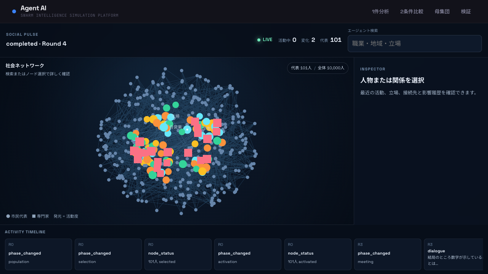

Decision simulation
問いを入れる。
1万人の社会が
動き出す。
市場参入、製品受容、政策影響。現実に打つ前に、社会の反応・対立・波及をシミュレーションする。
市場分析
製品受容
政策影響
シナリオ比較

10,000合成人口
101代表エージェント
LIVESSEで進捗配信
Reaction → Debate → Decision
声の分布を読む
賛否だけでなく、職業・地域・立場ごとの反応と、その変化を社会ネットワーク上で可視化。
盲点を議論で潰す
市民代表と専門家が反証を交えながら討議。見落とした論点やリスクを多視点で掘り下げる。
判断を次の一手へ
根拠、シナリオ比較、推奨アクションをDecision Briefに集約。分析をそのまま意思決定へ。
Architecture
ひとつの問いが、判断材料に変わるまで。
Evidence-grounded pipeline
01 / INPUT
問い ＋ 資料
自由入力・TXT・MD・PDF
›
02 / GROUND
GraphRAG
根拠と関係性を構造化
›
03 / SIMULATE
Society Pulse
合成人口・反応・伝播を生成
›
04 / DELIBERATE
Council
代表者＋専門家が反証
›
05 / ACT
Decision Brief
比較・根拠・次アクション
SYSTEM
Vue 3FastAPI + SSE
SQLite / PostgreSQLOpenAI-compatible / Anthropic / Ollama